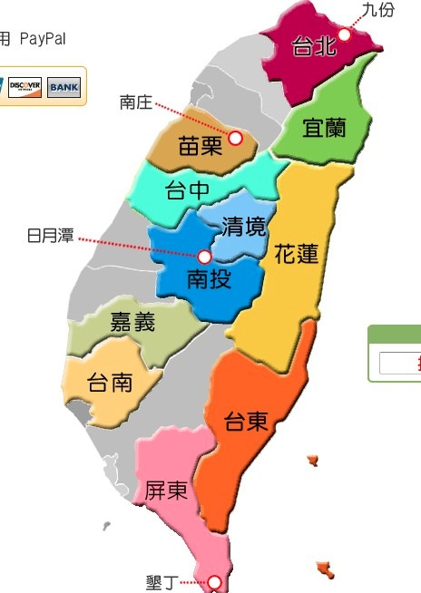

私奔到taipei
入台证
台湾通行证申请表格下载
出入境管理局
查询通行证办理进度
攻略
民宿
花莲
垦丁 http://kenting.fun-taiwan.com/
- 恋海126: 客满
- 海堤: 客满

地图

行程 10天, 3.28 - 4.6
- 3.28 杭州 - 桃园机场 -- 高铁 -> 台北 - 淡水 住淡水
早上8:30租车去机场
03 月 28 日 KA627 Dragonair HGH 11:05 HKG 13:25 0 5:05 321 经济舱 Supersaver (S)
03 月 28 日 KA5420 Cathay Pacific HKG 14:35 TPE 16:10 0 77W 经济舱 Supersaver (S)
※【捷運】搭乘捷運至淡水捷運站下車，往對面中油加油站旁的英專路步行約5分鐘，「淡水宰相民宿」就在墊腳石書局斜對面79巷進入，巷口有我們的招牌。
※【公車】可搭乘指2、指10、紅26、紅27、台汽、指南客運、淡水客運、三重客運或新店客運，於淡水站下車後，往對面中油加油站旁的英專路步行約5分鐘，「淡水宰相民宿」就在墊腳石書局斜對面79巷進入，巷口有我們的招牌。

- 3.29 台北
- 坐高铁从机场到台北：去台北火车站拿一本时刻表，捷运时刻表
- 3.30 台北
- 3.31 台北 -- 基隆客运1602 -> 九份 住九份 望琴海:海一海二
袁先生
您的訂單已確認 房間將為您保留 請放心
請您於訂房系統內以 查訂單 找出訂定單後以線上刷卡或paypal付訂金 (1/2)
請參考交通資訊: http://www.a-home.tw/2012/04/blog-post.html#more
當天您若於瑞芳火車站搭計程車上山 (費用約NT$200)
請上車後來電 將告訴司機到達地點 (福山宮旁)
若搭巴士上山 請於老街下一站 隔頂 下車後來電 將去接您
您可於桃園機場購賣台灣手機及無線上網 費用約NT$450/7日, 需雙證件辦理
期待您的假期
梅姐
九份望琴海民宿
886-972-187565 (台灣手機打 0972-187565)

- 4.01 九份 -- 公交车 -> 瑞芳 -- 自强号 -> 花莲 住花莲
坐车从九份到瑞芳火车站，然后做区间车去宜兰（如果有时间还可以在宜兰逛逛），然后换成区间车去花莲。
区间车可以随时买票上车，没座位能买站票
順行方向：臺北→花蓮→臺東→高雄→臺中→臺北 （環島鐵路順時針方向）
住：知了居 海风和明月
4/1 明月+海風 2400+2600=5000元 TWD
4/2 明月+诲風 （2400+2600）*0·9=4500元 TWD
住宿地址：花蓮市水源街55巷18號(鄰近松園別館)
訂房專線：0921-250066‧(03)832-9676
電子信箱：u8540ms51@gmail.com

- 4.02 花莲
- 4.03 花莲 -- 观光列车 -> 枋寮 -- 租车(1000 NT) -> 垦丁 住垦丁

- 4.04 垦丁
- 租机车游恒春半岛一圈
- 4.05 垦丁
- 去恒春买水果
- 音乐节, 4人日票: 5135NT , 1075RMB
取票：
墾丁門市取票 (無停車位) -適合港澳遊客或無交通工具者
屏東縣恆春鎮墾丁路34-1號
订单号 8111
姓名 郭舟东
- 4.06 垦丁 - 台北 - 杭州
- 6:30 打车，车程约2个小时
- 8:50 到左营高铁站，银联购买4张到桃园站的票
- 9:18 搭乘左营到桃园的高铁，车程1小时40分钟
- 10:54 到达桃园高铁，做机场接驳巴士，车程15分钟
- 11:15 到桃园机场，出境后到免税购物。。。
- 13:30 飞机起飞，返杭
- 19:00 到达杭州
04 月 06 日 KA5495 Cathay Pacific TPE 13:30 HKG 15:10 0 4:40 744 经济舱 Supersaver (S)
04 月 06 日 KA636 Dragonair HKG 16:00 HGH 18:10 0 320 经济舱 Supersaver (S)
交通
垦丁到台北机场: 我记得从高雄出发还要坐2个小时左右的高铁呢~所以还是早上出发吧，到了台北车站有大巴直接到桃园机场，还要大概一个小时，价格NT125
费用
- 机票 8332 RMB
- 宰相民宿: 3天两间房 9400 NT = 2000 RMB
- 九份ahome的费用：1天，4300 NT = 914 RMB
- 花莲知了居 4/1 明月+海風 2400+2600=5000元 , 4/2 明月+诲風 （2400+2600）*0·9=4500元, 共 9500 NT = 2021 RMB
- 垦丁春浪音乐节门票, 4人日票: 5135NT = 1075 RMB